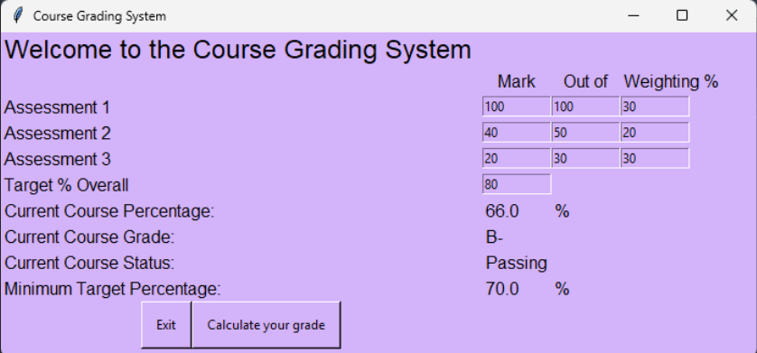
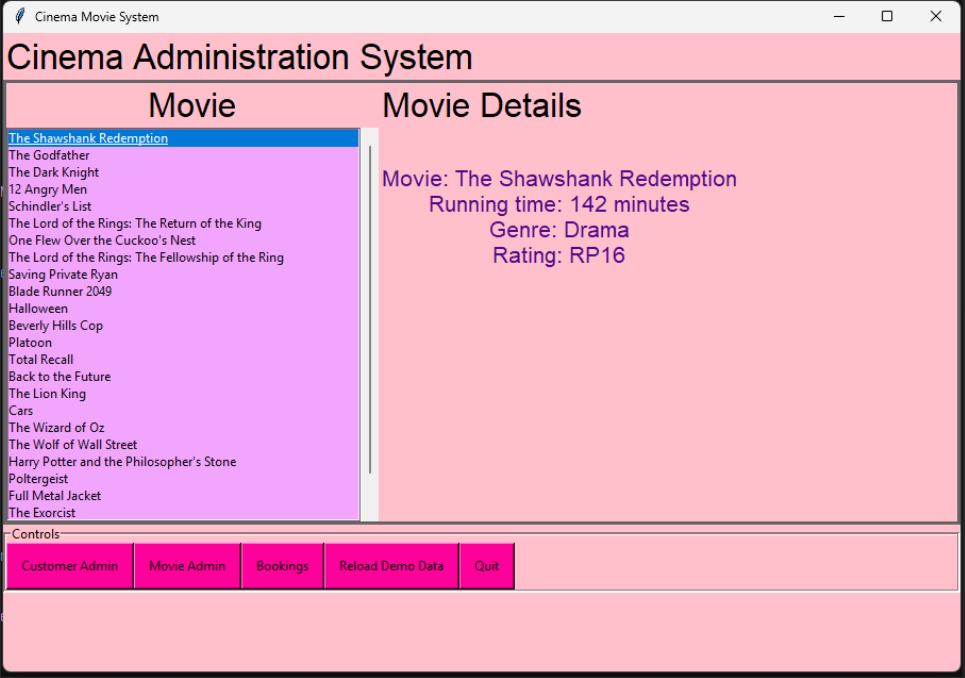
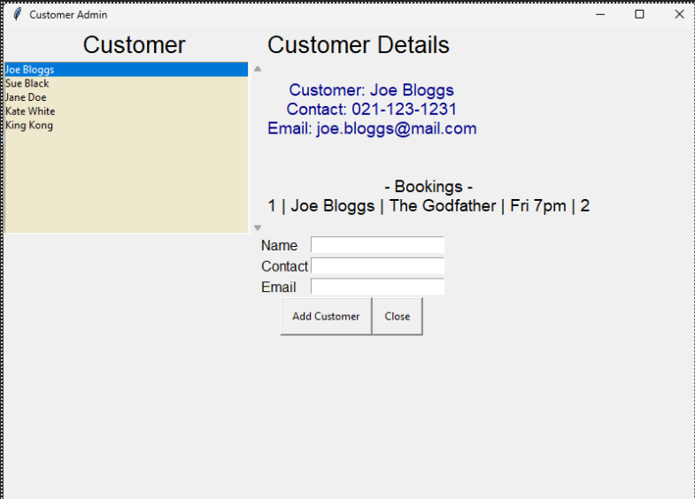
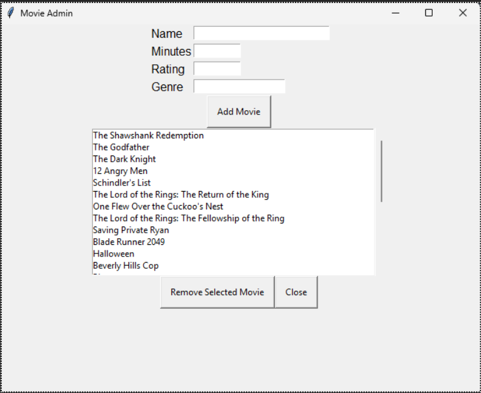
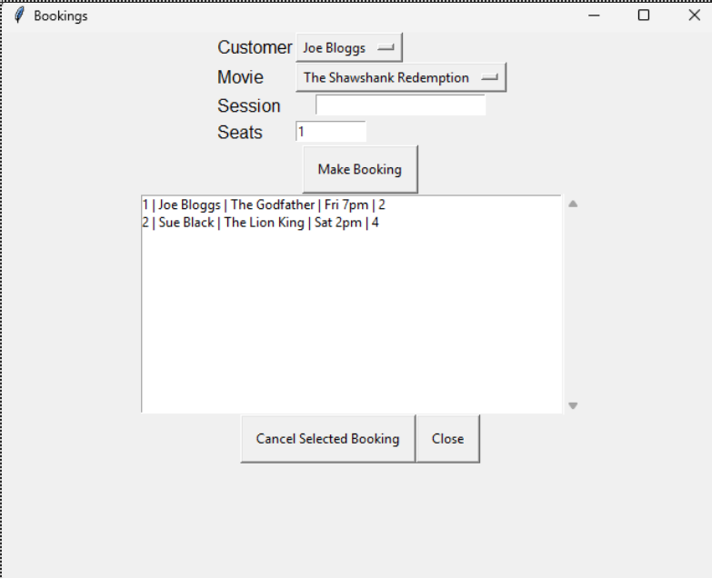
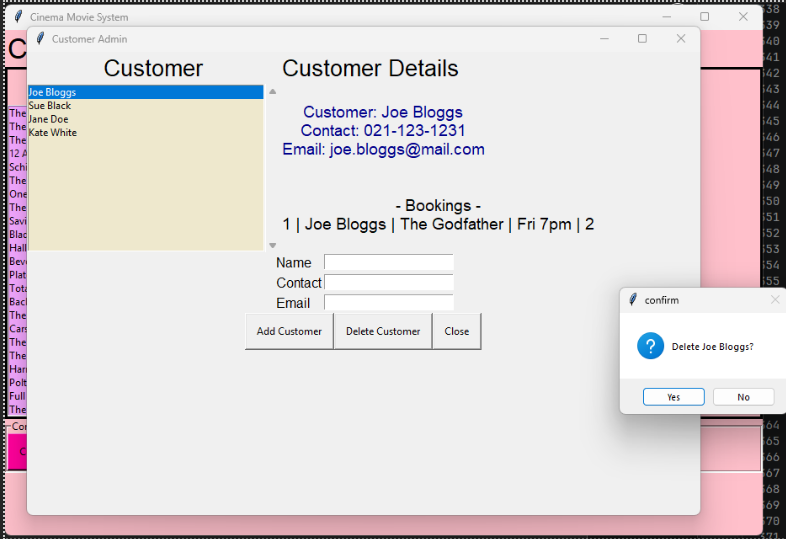

ITPF5.110 Programming Fundamentals taught me the core knowledge and skills to use software development tools to create a working application that meets given requirements. The course used Python as a procedural language and then moved into object-oriented programming. The weekly topics covered syntax, PEP 8, and turning pseudocode into code. They also covered variables, data types, and operators, conditional statements, loops, arrays, and functions (including parameters, arguments, returns, and debugging). Later topics were variable scoping, exception handling, external libraries with pip, lambdas, visualisation and GUI coding, and classes, inheritance, and polymorphism. The course was assessed through three practical assignments: designing, debugging, and building code (20%), creating a program (30%), and designing and building a deployable solution (50%).
In this course I learned how to turn a problem description into working Python code, starting with pseudocode and planning, then writing clear, well-commented programs that follow PEP 8 naming and formatting conventions. I learned to use loops, conditionals, and functions to break a problem into smaller parts, and to use problem-solving techniques such as printing variables to debug. I also learned how to work with data by loading and linking CSV files to analyse real sales data. Using a generative AI tool taught me to write clear, structured prompts, to critically check the code it produced, and to see its limitations instead of trusting it blindly. I learned to build a graphical interface with guizero library, to validate user input, and to calculate and display results. Moving to object-oriented programming, I learned how to design classes with attributes, properties with data validation, and methods, and how objects such as a Cinema, Movie, Booking, and Customer work together in one application. Throughout, I also learned to keep a developer diary of my prompts, changes, and debugging, which made my work easier to explain and improve.
In Assignment 1, I built a Python program called PizzaPlace that loads and links four CSV data files from a pizza restaurant's year of sales. It answers six questions: customers per day, peak hours, typical pizzas per order, bestsellers, total money made, and seasonality. I used a generative AI tool to produce the first version, then improved it with follow-up prompts and my own changes. I included comments, at least three functions, at least two loops, PEP 8 naming, problem-solving techniques, and a known-issues section. I documented the process in a developer diary with my prompts and a reflection on the AI's limitations. In Assignment 2, I built a GUI assessment grade calculator that lets a student enter each assessment's weighting, maximum mark, and submission mark. It validates the input (for example, weightings can't exceed 100% and a submission mark can't exceed the assessment mark), then calculates and reports the course percentage, letter grade, passing status, and the target needed on the remaining assessments, with percentages formatted to two decimal places. The program also asks for confirmation before it exits. In Assignment 3, I built a cinema administration application using object-oriented programming, with Cinema, Movie, Booking, and Customer classes in separate files (main.py, cinema.py, movie.py, booking.py, and customer.py). I implemented methods to add, remove, and find movies, calculate total minutes, and make, edit, and remove bookings. I used Python properties with validation, such as allowing an audience rating to be set only once, and I connected everything to a GUI. I supported the work with development notes and weekly progress discussions with my lecturer.






This course taught me that programming is as much about planning, testing, and explaining as it is about writing code. Using AI in the first assignment showed me that generated code can look convincing but still contain mistakes or miss requirements, so I need to understand every line and check the output myself. I found it challenging to manage input validation and edge cases, and then to organise a larger object-oriented program across several files. I’d like to keep practising testing my code with different inputs and writing cleaner, simpler designs before I start coding. Keeping a developer diary also showed me how useful it is to record what I tried, what failed, and why a change worked. Overall, I feel more confident turning a set of requirements into a working application, which gives me a solid base for further programming courses and future software development work.
Not recieved yet.